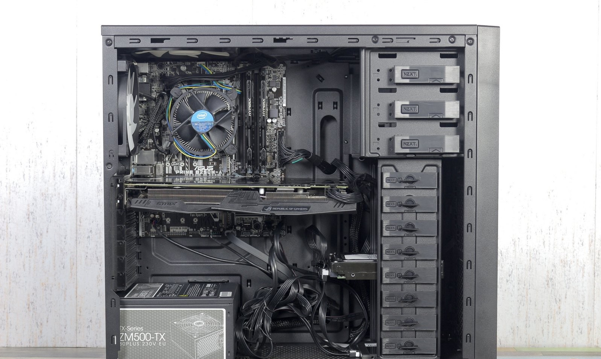

Средняя сборка представляет собой ПК для работы с уже более серьзными задачи, по типу видеомонтажа, работы в Photoshop и прочее. Также сборка способна запускать более требовательные игры(GTA 5, Apex Legends, PUBG)
Пример такой сборки:
- Процессор: Intel core I5-9500
- Видеокарта: ASUS GeForce 1060 STRIX
- Материнская плата: Asus Phoenix 4 PRO
- Оперативная память: Kingstone HyperX 3600MHz DDR4 8Gb
- Охлаждение процессора: Cooler Master Wind 120
- Внутренние накопители: Western Digital EZEX 1Tb
- Блок питания: Aerocool KSAS 700W
- Корпус: NZXT White
